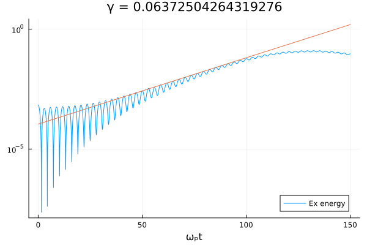
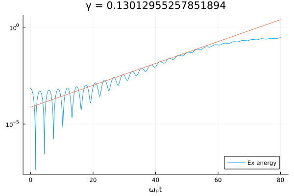
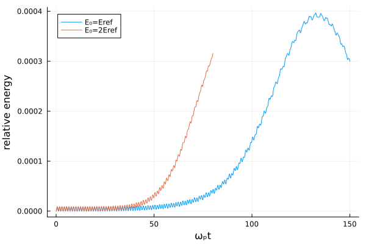

Stimulated Raman Scattering without spin
We consider the Vector spin Vlasov-Maxwell laser plasma model with ${\mathbf f}=0$ and ${\mathfrak h}=0$. More details in the section Numerical experiments in (Crouseilles et al., 2023).
using Plots
using FFTW
using ProgressMeter
using VectorSpin\[\left\{ \begin{aligned} &\frac{\partial f}{\partial t} + p \frac{\partial f}{\partial x} + [ E_x - {\mathbf A}_\perp \cdot \frac{\partial {\mathbf A}_\perp}{\partial x} ]\frac{\partial f}{\partial p} = 0,\\ &\frac{\partial E_x}{\partial t} = -\int_{\mathbb{R}} p f \mathrm{d}{p},\\ &\frac{\partial E_y}{\partial t} = - \frac{\partial^2 A_y}{\partial x^2} + A_y \int_{\mathbb{R}} f \mathrm{d}{p},\\ &\frac{\partial E_z}{\partial t} = - \frac{\partial^2 A_z}{\partial x^2} + A_z \int_{\mathbb{R}} f \mathrm{d}{p},\\ &\frac{\partial {\mathbf A}_\perp}{\partial t} = - {\mathbf E}_\perp,\\ &\frac{\partial E_x}{\partial x} = \int_{\mathbb{R}} f \mathrm{d}{p} - 1. \end{aligned} \right.\]
We consider the periodic condition with spatial period $L=4\pi/k_e$, also take $H=5$ for the computational domain in $v$-direction.
We take the following values for physical parameters:
alpha = 0.02
ke = 1.2231
vth = 0.17
k0 = 2keMathematical domain parameters are taken as $N_x=129, N_v=129, \Delta t =0.05$
xmin, xmax, nx = 0.0, 4pi / ke, 129
vmin, vmax, nv = -5.0, 5.0, 129
mesh = Mesh(xmin, xmax, nx, vmin, vmax, nv)
dt = 0.05\[w_0=2.6428, k_s=k_e\]
w0 = 2.6428
ks = keWe use a perturbed Maxwellian as an initial condition for $f$
\[f(t=0,x,p)=(1+\alpha \cos(k_e x))\frac{1}{\sqrt{2\pi}v_{th}}e^{-\frac{p^2}{2v_{th}^2}},\]
f(x, v) = exp(-0.5 * v^2 / vth^2) * (1 + alpha * cos(ke * x)) / sqrt(2π) / vthand the initial longitudinal electric field
\[E_x(t=0,x)=(\alpha /k_e)\sin(k_e x). \]
Here $\alpha$ and $k_e$ are the amplitude and the wave number of the perturbation respectively, and the $v_{th}$ is the electron thermal speed. For the transverse fields, we consider an incident electromagnetic wave with circular polarization:
\[\begin{aligned} & E_y(t=0,x)=E_0 \cos(k_0 x), \\ & E_z(t=0,x)=E_0 \sin(k_0 x),\\ & A_y(t=0,x)=-\frac{E_0}{w_0} \sin(k_0 x), \\ & A_z(t=0,x)=\frac{E_0}{w_0} \cos(k_0 x), \end{aligned} \]
where the $k_0$ and $w_0$ are the wave number and the amplitude of the transverse electric field respectively.
We also take the amplitude of the incident wave $E_{ref}=0.325$ as a reference value. be in the range $0.25E_{ref} \leq E_0 \leq 2E_{ref}.$
function run(final_time, f0, f1, f2, f3, E1, E2, E3, A2, A3)
dt = 0.05
nsteps = ceil(Int, final_time / dt + 1)
k0 = 2.0 * ke
w0 = sqrt(1.0 + k0^2) # w0
h_int = 0.0
data = Diagnostics(f0, f2, f3, E1, E2, E3, A2, A3, mesh, h_int)
H2 = H2fhSubsystem(mesh)
He = HeSubsystem(mesh)
HA = HASubsystem(mesh)
H3 = H3fhSubsystem(mesh)
Hp = HpSubsystem(mesh)
save!(data, 0.0, f0, f2, f3, E1, E2, E3, A2, A3)
@showprogress 1 for i = 1:nsteps
step!(H2, f0, f1, f2, f3, E3, A3, dt / 2, h_int)
step!(He, f0, f1, f2, f3, E1, E2, E3, A2, A3, dt / 2)
step!(HA, f0, f1, f2, f3, E2, E3, A2, A3, dt / 2)
step!(H3, f0, f1, f2, f3, E2, A2, dt / 2, h_int)
step!(Hp, f0, f1, f2, f3, E1, dt)
step!(H3, f0, f1, f2, f3, E2, A2, dt / 2, h_int)
step!(HA, f0, f1, f2, f3, E2, E3, A2, A3, dt / 2)
step!(He, f0, f1, f2, f3, E1, E2, E3, A2, A3, dt / 2)
step!(H2, f0, f1, f2, f3, E3, A3, dt / 2, h_int)
save!(data, i * dt, f0, f2, f3, E1, E2, E3, A2, A3)
end
data
endtime evolution of the longitudinal electric field norm for E_0 = E_{ref}
\[|| E_x (t)|| =\left(\frac{1}{2}\int_0^L E_x^2(t,x) \mathrm{d}\mathrm{x}\right )^{\frac{1}{2}}\]
final_time = 150
E0 = 0.325
E1 = fft(alpha ./ ke .* sin.(ke .* mesh.x))
E2 = fft(E0 .* cos.(k0 .* mesh.x))
E3 = fft(E0 .* sin.(k0 .* mesh.x))
A2 = -fft(E0 ./ w0 .* sin.(k0 .* mesh.x))
A3 = fft(E0 ./ w0 .* cos.(k0 .* mesh.x))
f0 = initialize_distribution(mesh, f)
f1 = zeros(mesh.nx, mesh.nv)
f2 = zeros(mesh.nx, mesh.nv)
f3 = zeros(mesh.nx, mesh.nv)
data1 = run(final_time, f0, f1, f2, f3, E1, E2, E3, A2, A3)
plot(data1.time, data1.Ex_energy, yscale = :log10, label = "Ex energy")
line, γ = fit_complex_frequency(data1.time, data1.Ex_energy)
plot!(data1.time, line, legend = :bottomright, label = :none)
title!("γ = $(imag(γ))")
xlabel!("ωₚt")
final_time = 80
E0 = 0.65
E1 = fft(alpha ./ ke .* sin.(ke .* mesh.x))
E2 = fft(E0 .* cos.(k0 .* mesh.x))
E3 = fft(E0 .* sin.(k0 .* mesh.x))
A2 = -fft(E0 ./ w0 .* sin.(k0 .* mesh.x))
A3 = fft(E0 ./ w0 .* cos.(k0 .* mesh.x))
f0 = initialize_distribution(mesh, f)
f1 = zeros(mesh.nx, mesh.nv)
f2 = zeros(mesh.nx, mesh.nv)
f3 = zeros(mesh.nx, mesh.nv)
data2 = run(final_time, f0, f1, f2, f3, E1, E2, E3, A2, A3)
plot(data2.time, data2.Ex_energy, yscale = :log10, label = "Ex energy")
line, γ = fit_complex_frequency(data2.time, data2.Ex_energy)
plot!(data2.time, line, legend = :bottomright, label = :none)
title!("γ = $(imag(γ))")
xlabel!("ωₚt")
plot(data1.time, abs.(data1.energy .- first(data1.energy)) ./ first(data1.energy), label="E₀=Eref")
plot!(data2.time, abs.(data2.energy .- first(data2.energy)) ./ first(data2.energy), label="E₀=2Eref")
xlabel!("ωₚt")
ylabel!("relative energy")